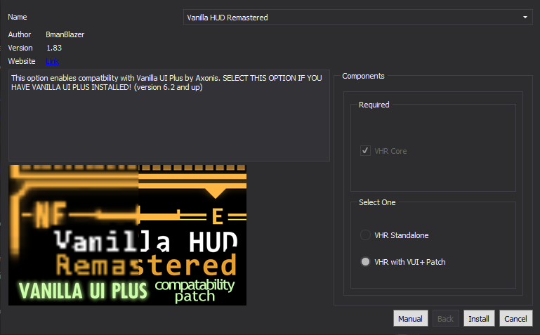

Creating a Separator in Mod Organizer 2
- Right-click in the left pane of MO2 and select Create Separator
- Input HUD + UI into the pop-up and select OK
User Interface Organizer
Install normally
- Ensures UI extensions work together flawlessly
The Mod Configuration Menu
Files to install:
- Main File: The Mod Configuration Menu
- Update File: MCM BugFix 2
- Allows any number of mods to be configured via a single in-game menu
MCM Matches HUD Color
Install normally
- Changes the MCM menu and logo to the active HUD color. Mod by ItsMeJesusHChrist
One HUD
Install normally
- Lets you take control of your HUD by adding, hiding, or removing elements
B42 Quickthrow - oHUD Patch
Files to install:
- Main File - oHUD-iHUD compatibility patch
- Patch for B42 Quickthrow and oHUD
The Weapon Mod Menu
Install normally
- Lets you remove weapon mods and see all available mods for a particular weapon
Loot Menu
Install normally
- Adds the Fallout 4-style quick looting system to the game
Loot Menu - Vanilla UI Plus Patch
Files to install:
- Main File: Loot Menu - Vanilla UI Patch
- Tweaks the appearance of Loot Menu to better fit VUI+'s style
Better Pickup Prompt
Install normally
- Makes several improvements to the pickup prompt that appears when you look at an item
JIP Improved Recipe Menu
Install normally
- Optimizes the crafting/recipe menu
Quest Item Hider
Install normally
- Hides misc. quest items in your inventory
Universal Item Sorter
Install normally
Optional tweaking available:
- In the left pane of MO2, double-click on Universal Item Sorter
- In the INI-Files tab, click on config/Universal Item Sorter.ini
- All sorting tags can be enabled/disabled/re-named here
- Adds configurable prefixes before items in the pip-boy menu
JIP Companions Command and Control
Install normally
- Changes the way companions are controlled and interacted with and adds new tactical features similar to isometric RPGs
Tutorial Killer
Install normally
Manual FNVEdit editing recommended:
- Run FNVEdit through MO2
- Right-click in the Module Selection pop-up and click Select None
- Check the box adjacent to Tutorial Killer.esp then hold down left shift and click OK
- Wait for the message Background Loader: finished to appear in the right pane
- Expand the Tutorial Killer.esp header and the FormID List header within it
- Select TutorialKillerFormList
- Right-click in the box to the right of FormIDs (sorted) and select Add
- Double-click on the NULL - Null Reference that appears and input CGQuestTarget [MESG:00058BEE] into the box
- This tweak adds a missing pop-up to the FormID that prevents the pop-ups
- Save and exit
- Removes tutorial pop-ups
No Traps Popup
Install normally
- Removes message prompt to disarm or rearm traps
Simple DLC Delay
Install normally
- Delays DLC pop-ups until you meet the level requirements or discover the entrances to the DLC areas
Caravan Card Control
Hide the following:
- CardMaster NV.esp
- Adds a (Dupe) suffix to any Caravan cards you already own
Hotkey Scroll Wheel
Install normally
Optional tweaking available:
- In the left pane of MO2, double-click on Hotkey Scroll Wheel
- In the INI-Files tab, click on config/Hotkey Scroll Wheel.ini
- The key-bindings for the mod can be changed here
- Reference the Dec column from this for what number to use for hotkeys
- Cycle through the hotkeys using the default hotkey interface
Optional: Colored Cursors
Install instructions
- Download the main file
- During installation, expand the folder of the color of your choice
- Right-click on the data folder and select Set data directory
- Changes the cursor to match HUD color. Only needed if you plan on changing your HUD color
Just Dynamic Crosshair
Install normally
- Adds a highly configurable dynamic crosshair that changes in accordance to the weapon's spread
Just Visual Objectives
Install normally
- Adds highly configurable visual 3D markers for all of your current objectives
Just Hit Marker
Install normally
- Adds highly configurable hit markers
Vanilla UI Plus
FOMOD instructions:

Manual tweaking required:
- Right-click on Vanilla UI Plus in the left pane of MO2 and select Open in Explorer
- Navigate to Menus\Prefabs\VUI+\ and open settings.xml
- Set <_VUI+noMODSlabel> to 1
- This tweak removes the prefix from weapon mods to retain compatibility with Universal Item Sorter
- Many of the mod's features can be tweaked here as well
- Greatly improves and fixes the UI while staying true to the vanilla
Vanilla UI Plus Plugin
Install normally
- Displays additional information in the Container Menu and the Companion Wheel
California Fonts
Install normally
- Smaller, more modern font replacer
Vanilla HUD Remastered
FOMOD instructions:
- Up-scales the vanilla HUD to better fit higher resolution screens
VUI+ - Vanilla HUD Remastered Patch
Install normally
- Patches Vanilla HUD Remastered to retain compatibility with the latest VUI+ features
NOTE: This mod and Vanilla UI Plus are not on Nexus, so you will manually check for updates
Optional: Colored Cursors
Install instructions
- Download the main file
- During installation, expand the folder of the color of your choice
- Right-click on the data folder and select Set data directory
- Changes the cursor to match HUD color. Only needed if you plan on changing your HUD color
MTUI Dialogue Background
Install normally
- Adds the dialogue menu background gradient from MTUI
Project FNVIcons
Files to install:
- Optional File - Project FNVIcons - Challenge
Hide the following:
- Project FNVIcons - Challenge.esp
- Adds unique icons to the challenge perks
Project FNVIcons ESP Replacer
Files to install:
- Main File - 1.6. Core - Project FNVIcons ESP Replacer
- Reverts the pop-up icons back to vanilla, removes changes to the Free Radical perk, and forwards YUP/UP+ fixes
Quickthrow Stylized HUD Icons
Files to install:
- Main File - Quickthrow Stylized FNV Icons
- Optional File - oHUD-iHUD Compatible Menu
- Adds better icons from B42 Quickthrow
Consistent Pip-Boy Icons
Files to install:
- Main File: The Foundation Edition 2x
- Optional File: (Recommended) Upscaled Consistent Pip-Boy Icons
FOMOD instructions:


Special activation instructions:
- Load the The Foundation Edition file after the Upscaled Consistent Pip-Boy Icons in the left pane of MO2
- Up-scales and fixes 1000s of icons
Consistent Pip-Boy Icons - Project FNVIcons Challenges
Files to install:
- Main File - 1.7. Core - Consistent Pip-Boy Icons - Project FNVIcons Challenges
- Up-scales and fixes the new challenge icons. Mod by ItsMeJesusHChrist, but the FOMOD does not let you choose the option